34. Elementare Signale#
34.1. (Teil I)#
Skript von Thomas Kesper & Seyit Ahmet Duman
34.1.1. Elementare Signale sind grundlegende Signale aus welchen komplexere Signale zusammengesetzt sind. Sie sind elementar, da sie nicht weiter in einfacheren Formen dargestellt werden können. Sie sind also unzerlegbar und stellen somit die Basis von Signalen dar. Ein Elementarsignal wird mit einer Formel x(t) exakt definiert.#
34.1.2. Beispiel der Nutzung von Elementaren Signalen:#
Bei dem Testen von Audiosystems spielt man Elementare Signale ein und Überprüft den Ausgang. Da es Grundsignale sind, kann man relativ einfach durch das Signal am Ausgang die korrektheit des Systems überrpüfen.
34.1.3. Bekanntesten Elementar Signale:#
34.1.4. Sprung-, Impuls- (Dirac) und Rampen Signal#
34.1.4.1. Sprung:#
Ein Sprung Signal ist ein Signal, welches für negative x Werte den Wert 0 und für positive x Werte den Wert 1 annimmt. Sie wird oft als Schalter interpretiert, der bei x= 0 Zeitpunkt eingeschaltet wird und dann für alle zukünftigen Zeiten eingeschaltet bleibt.
34.1.4.1.1. Ein Analoges Signal eines Sprungs wird wiefolgt definiert:#
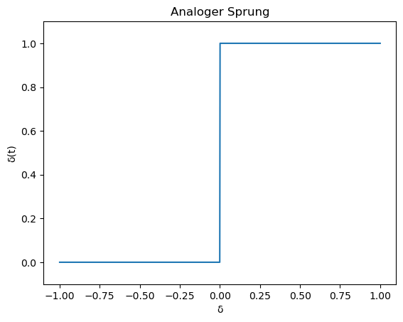
34.1.4.1.2. Ein Diskretes Signal eines Sprungs wird wiefolgt definiert:#
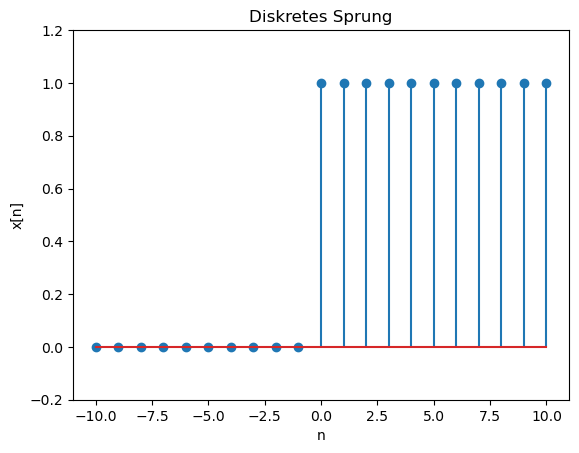
34.1.4.2. Impuls (Dirac):#
Ein Impuls Signal oder Dirac genannt ist ein Signal, welches bis auf einen sehr kurzen Moment immer x(t) = 0 ist. Aber in diesem einen kurzen Moment ist x(t) unendlich groß. Bei einem analogen Signal und einem diskreten wird dies jeweils anders beschrieben.
34.1.4.2.1. Bei einem Analogen Signal kann der Implus unendlich groß sein und wird somit mit unendlich definiert:#
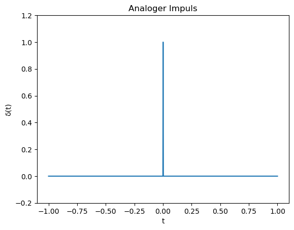
34.1.4.2.2. Bei einem Diskreten Signal kann der Impuls höchsten 1 sein, da dies der größte Wert sein kann. Zwischen 1 und 0 gibt es aber unendlich viele reele Zahlen:#
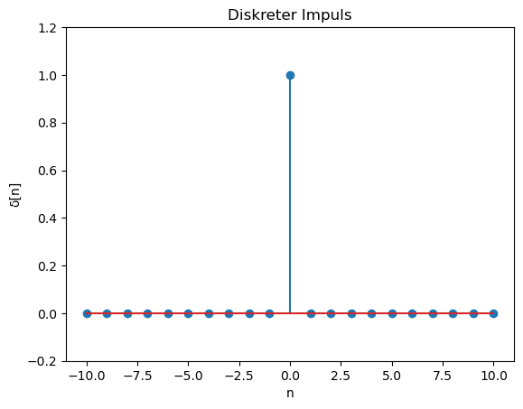
34.1.5. Vom Rechteck zum Dirac-Impuls#
Ausgangssituation: Rechteckpuls mit Breite \(\Delta t \) und Höhe $\ \frac{1}{\Delta t} $
Wenn wir \(\Delta t \) gegen null gehen lassen, wird Rechteckpuls \(\ \delta(t) \) unendlich dünn und unendlich hoch.
Aber die Fläche von Rechteck bleibt ‘1’
\(\ \int_{-\infty}^{\infty} \delta(t)\,.\,dt = 1 \)
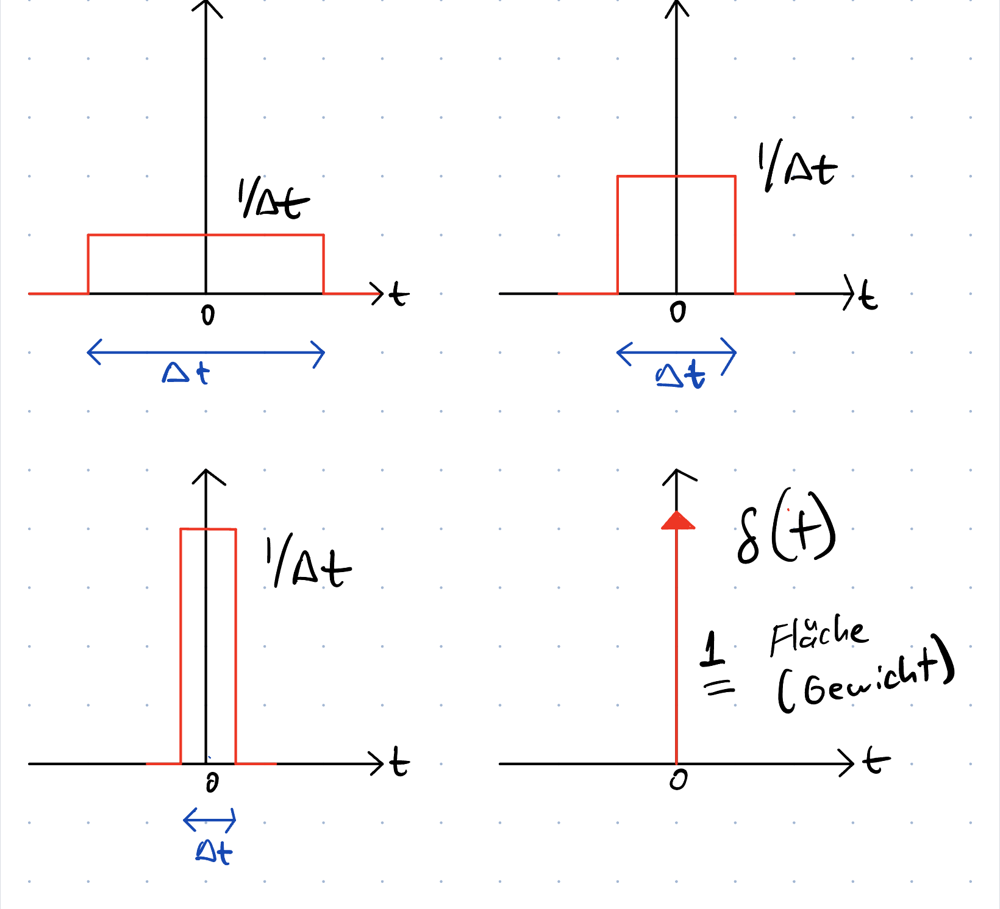
34.1.6. Dirac-Impuls Eigenschaften#
Dirac-Funktion ist zum Abtasten von einem analogen Signal:
Fläche von Dirac: \(\ \int_{-\infty}^{\infty} \delta(t)\,.\,dt = 1 \) und \(\ \delta(t) = 0, t\neq\)0$
Abtastung: \(\ \int_{-\infty}^{\infty} x(t)\,.\,\delta(t)\,.\,dt = x(0) \)
Verschobene Delta-Funktion im Integral \(\ \int_{-\infty}^{\infty} x(t)\,.\,\delta(t-t_0)\,.\,dt = x(t_0) \)
Diskrete Funktion: \(\ \sum_{-\infty}^{\infty} x[n]\,.\,\delta[n-k] = x[k] \)
Funktionswert von \(\ x(t) \) an Stelle \(\ t_0\) abgetastat
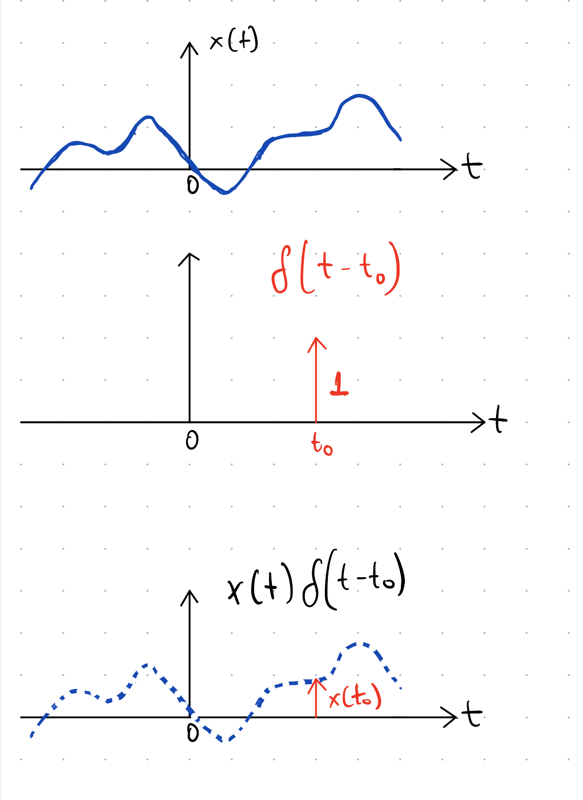
34.1.7. Beziehung zwischen Sprung, Dirac und Rampe:#
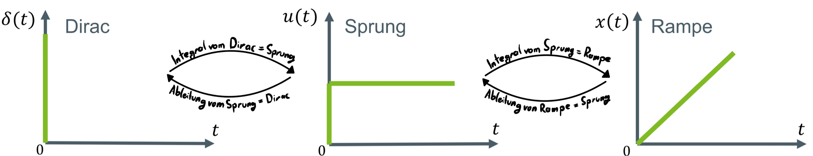
Das Integral eines Impuls Signals (Dirac) ist immer ein Sprung Signal. Dadurch folgt, dass die Ableitung eines Sprungs einen Impuls Signal ist. Das Integral eines Sprungs ist ein Rampen Signal und die Ableitung eines Rampen Signals ist ein Sprung Signal.
Kontinuierlich
Integral von Dirac: |
\(\ u(t) = \int_{t = -\infty}^{\infty} \delta(t) \) |
Integral von Sprung: \(\ x(t) = \int_{t = -\infty}^{\infty} u(t) \) |
|---|---|---|
Ableitung von Sprung: |
\(\ \delta(t) = \frac{du}{dt} \) |
Ableitung von Rampe: \(\ u(t) = \frac{dx}{dt} \) |
Diskret
Integral von Dirac: |
\(\ u[n] = \sum_{k = -\infty}^{\infty} \delta[k] \) |
Integral von Sprung: \(\ x[n] = \sum_{k = -\infty}^{\infty} u[k] \) |
|---|---|---|
Ableitung von Sprung: |
\(\ \delta[n] = u[n]-u[n-1] \) |
Ableitung von Rampe: \(\ u[n] = x[n]-x[n-1] \) |
34.1.8. Weitere Elementare Signale:#
34.1.9. Rechteck- Funktion#
$\ T_0 $ defeniert in der Recheck-Funktion die Breite des Rechtecks

Die Rechteck Funtion wird genutzt um einen bestimmten Bereich einer Funktion darzustellen. Wenn man die Rechteckfunktion (mit den Werten 0 oder 1) mit der gewünschten Funktion multipliziert, bekommt man eine Funktion, welche überall null ist, nur in den Bereichen wo das Rechteck ist, bekommt man die Werte der gewünschten Funktion.
34.1.10. Sinc- Funktion#
Sinc- Funktionen oder auch Spaltfunktion genannt. Diese wird definiert als:
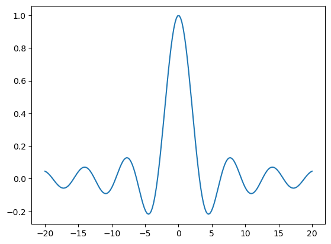
34.1.11. Kontinuierliche Kosinus- und Sinus-Schwingungen#
Kosiuns und Sinus Signale sind kontinuierliche Signale, welche über die folgenden Formeln ausgedrückt werden:
$$x̂:Amplitude $$
$$f0:Frequenz (Hz) $$
$$ω= 2 * pi * f0-> Kreisfrequenz (1/s)$$
$$T0= 1/f0-> Periodendauer(s) $$
` 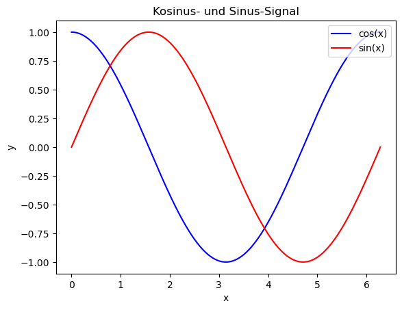
Hier sieht man eine Sinus und eine Cosinus Funktion. Die Amplitude beschriebt den höchsten Punkt, also hier 1. Die Periodendauer ist 6. Dazu sieht man, dass drch eine 90° Phasenverschiebung das Sinus Signal in ein Cosinus Signal gewandelt wird und auch umgekehrt.
35. Komplexe Zahlen#
35.1. Exkurs#
35.1.1. Imaginäre Zahl ‘j’#
\(\ x^2 = -1 \equiv x = \sqrt{-1}\)
Es ist unlösbar mit den reellen Zahlen
Da haben wir imaginäre Zahl ‘j’
Die quadratische Gleichung: \(\ x^2-2x+5 = ax^2-bx+c \)
diese lösen wir mit der abc-Formel bzw. pq-Formel
\(\ x_{1,2} = \frac{-b \pm \sqrt{b^2-4ac}}{2a} \)
\(\ x_{1,2} = \frac{-(-2) \pm \sqrt{(-2)^2-4.1.5}}{2.1} = \frac{2 \pm \sqrt{-16}}{2.1} = \frac{2 \pm \sqrt{16}.\sqrt{-1}}{2.1} = 1 \pm 2.\sqrt{-1} = 1 \pm 2j \)
\(\ x_1 = 1 + 2j \) und \(\ x_2 = 1 - 2j \)
35.1.2. Real- und Imaginärteil von komplexen Zahlen#
Eine komplexe Zahl besteht immer aus einem Realteil (einer reelen Zahl) und einem Imaginärenteil (einer komplexen Zahl). Die Sturktur einer komplexen Zahl ist immer wiefolgt: $\( α + βj \)$ Diese komplexe Zahl kann auf einem zweidimensionalen Koordinatensystem dargestellt werden. Diese nennt sich dann komplexe Zahlenebene.
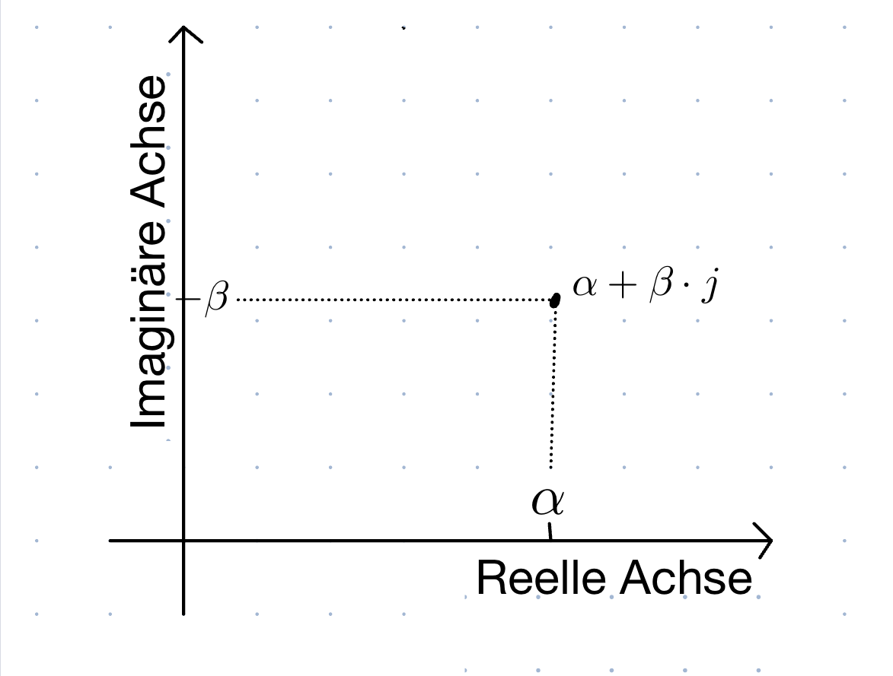
35.1.2.1. Betrag von komplexen Zahlen#
Der Abstand von dem Koordinatenursprung und der komplexen Zahl ist der Bestrag der komplexen Zahl.
Betrag von ‘z’: \( z : |z| = \sqrt{(α)^2 + (β)^2} \)
35.1.2.2. Winkel von komplexen Zahlen#
Der Winkel zwischen z und der reellen Achse wird gegen den Uhrzeigersinn gemessen.
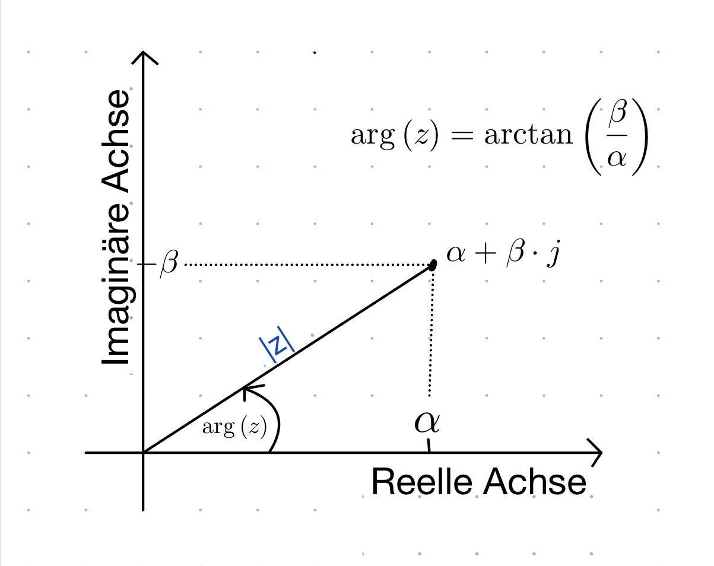
35.1.3. Darstellungsformen komplexer Zahlen#
35.1.3.1. Trigonometrische Form#
\(\ z = r\,(\cos(φ) +j\sin(φ)) \) $\ ∀z \in \mathbb {C} , r,φ \in \mathbb {R} $
35.1.3.2. Exponential Form#
\( z= r\,.e^{j\,.φ} \)
Die Trigonometrische und Exponential Form sind durch die Eulersche Formel verknüpft:
\( e^{j\,.φ} = cos(φ) +j\,.sin(φ) \)
35.1.4. Rechenregeln von komplexer Zahlen#
35.1.4.1. Addition#
\( z_1 + z_2 = (x_1 +j\,.y_1) + (x_2 + j\,.y_2)\)
\( =x_1 + x_2 + j\,.(y_1 + y_2) \)
35.1.4.2. Multiplikation#
\( z_1 \,. z_2 = (x_1 +j\,.y_1) \,. (x_2 + j\,.y_2)\)
\( =x_1 x_2 - y_1 y_2 + j\,. (x_1 y_2 + y_1 x_2) \)
35.1.4.2.1. Konjugiert Komplexe#
Spiegelung an der reellen Achse:
\( z^* = (x_1 + j\,.y_2)^* = x_1 - j\,. y_1 \)
\( (z_1 + z_2)^* = z^*_1 + z^*_2 \)
\( (z_1 \,. z_2)^* = z^*_1 \,. z^*_2 \)
35.1.4.2.2. Beispiel#
\(\ (2 + 3 \,j)\,(1-j) = \, ? \)
\(\ = 2 + 3 \,j - 2\,j - 3\,j^2 \)
\(\ = 2 + \,j - 3\,(-1) \)
\(\ = 2 + \,j + 3 \)
\(\ = 5 + \,j \)
35.2. Elementare Signale#
35.2.1. (Teil II)#
35.2.2. Kontiunirliche Sinus-Funktion#
Sinus-Funktion:
Signale aus Sinusschwingungen bestehen.
Sinus- und Kosinusfunktionen über Phasenverschiebung miteinander verknüpft.
\(\ \hat{x}\,sin(2\pi f_0t) = \hat{x}\,cos(2\pi f_0t - \frac{\pi}{2}) \)
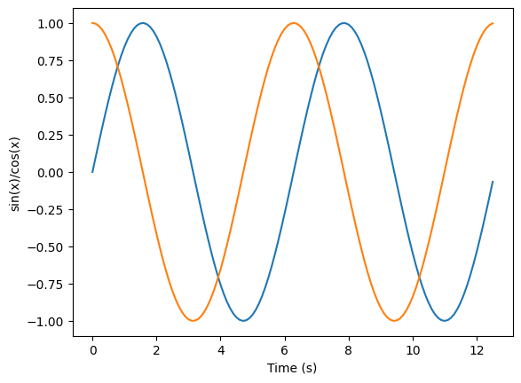
35.2.2.1. Beispiel#
\(\ x(t) = \hat{x}\,\sin(\omega \,t + \phi) \)
\(\ \hat{x} = 2 \)
\(\ f_0 = 1 Hz \)
\(\ \phi = -\frac{\pi}{4} \)
welche Zeitpunt x(t) = 0 |
welche Zeitpunt x(t) = 1 |
||
|---|---|---|---|
sin(0) = 0 |
\(\ \sin(\frac{\pi}{2})\) = 1 |
||
\(\ \omega = 2\,\pi \,f_0 \) |
\(\ 2\,\pi \,f_0\,t -\frac{\pi}{4} = \frac{\pi}{2} \) |
||
\(\ 2\,\pi \,f_0\,t -\frac{\pi}{4} = 0 \) |
\(\ 2\,\pi \,t -\frac{\pi}{4} = \frac{\pi}{2} \) |
||
\(\ 2\,\pi \,t -\frac{\pi}{4} = 0 \) |
\(\ 2\,\pi \,t = \frac{3\pi}{4}\) |
||
\(\ 2\,\pi \,t = \frac{\pi}{4}\) |
\(\ t = \frac{3}{8}\,s\) |
||
\(\ t = \frac{1}{8}\,s\) |
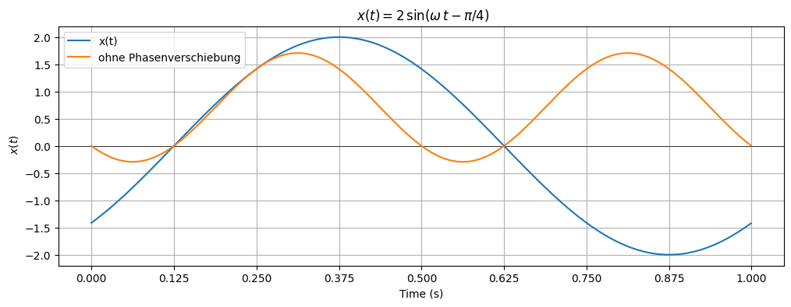
35.2.3. Diskrete Kosinus-Funktion#
Analog (kontinuierlich)
\(\ x(t) = \hat{x} \, \cos(2\pi \, f_0 \, t - φ) \)
\(\ \hat{x}: Amplitude \)
\(\ f_0: Frequenz \)
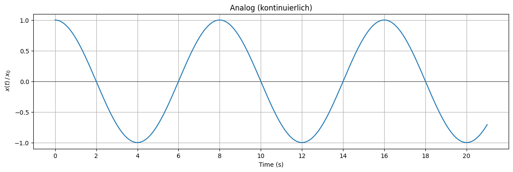
Diskret
Eine diskrete Konisnus / Sinus Funktion, gibt nur die Werte der Jeweiligen Form in einem Abtastintervall an.
\(\ x[n] = \hat{x} \, \cos(2\pi \, f_0 \, T_s \, n - φ) \)
\( 2\pi \, f_0 \, T_s \, n = \Omega_0 \)
\( Abtastintervall: T_s = \frac{1}{f_s} \)
<StemContainer object of 3 artists>
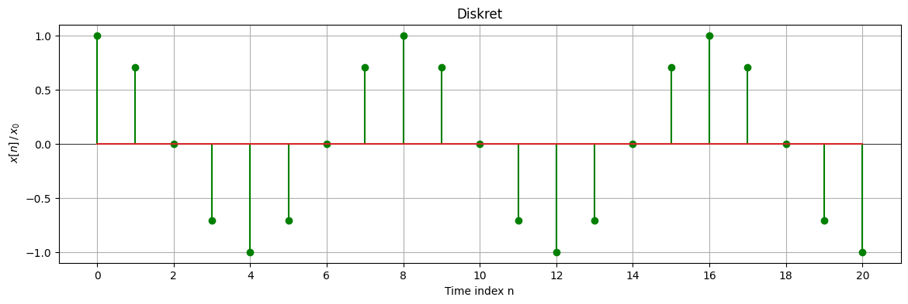
35.2.4. Kontinuierliche harmonische Exponentialfunktion#
Durch die Multiplikation einer Sinusschwingung mit der imaginären Zahl ‘j’ und die Addition der Kosinusschwingung dazu, erhalten wir die kontinuierliche harmonische Exponentialfunktion.
\(\ x(t) = \hat{x}\,\cos(2\,\pi\,f_0\,t) + j\,\hat{x}\,\sin(2\,\pi\,f_0\,t) = \hat{x}\,e^{j\,2\,\pi\,f_0\,t} \)
\(\ \hat{x}: Länge \)
\(\ 2\,\pi\,f_0\,t: Winkel \)
\(\ 2\,\pi\,f_0 = \omega: Winkelgeschwindigkeit \)
Positive Frequenz bedeutet Drehung gegen den Uhrzeigersinn
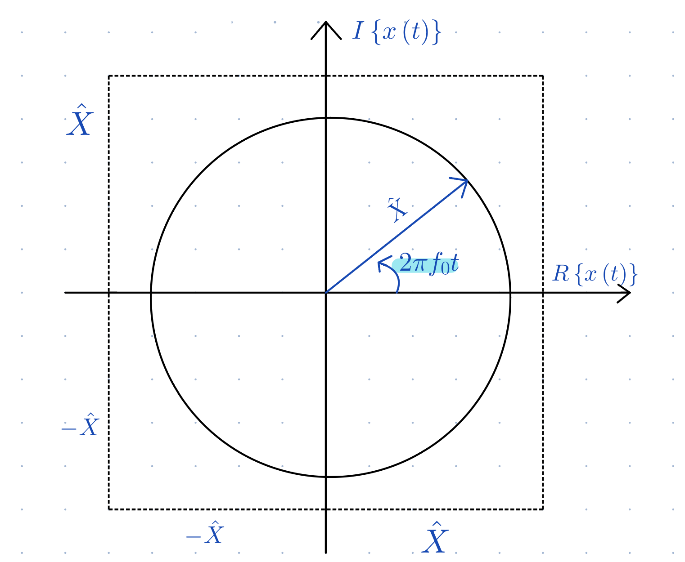
35.2.5. Diskrete harmonische Exponentialfunktion#
\( x[n] = \hat{x}\,e^{j\,\Omega\,n} = \hat{x}\,cos(\Omega\,n) + j\,\hat{x}\,\sin(\Omega\,n) \)
\( \Omega = 2\,\pi\,f_0\,T_s: normierte Kreisfrequenz \)
\(\ hat{x}: Amplitude \)
\(\ e: Euler'sche Zahl\, 2,71828... \)
Zeiger dreht sich in der komplexen Ebene mit Geschwindigkeit \(\ \Omega \) gegen den Uhrzeigersinn

35.2.6. Komplexe Exponentialfunktion#
\(\ x(t) = \hat{x}\,.e^{z\,t}\) und \(\ z = \sigma \,+ j\,\omega \in C \)
\(\ = \hat{x}\,.e^{(\sigma\,+\, j\,\omega)\,t}\)
\(\ = \hat{x}\,.e^{\sigma\,t} .\,e^{j\,\omega\,t}\)
\(\ = e^{\sigma\,t}\,.\hat{x}.\,(\cos(\omega\,t) +\, j\,\sin(\omega\,t))\)
\(\ \hat{x}.\,(\cos(\omega\,t) +\, j\,\sin(\omega\,t) \) : harmonische exponentielle Funktion
\(\ e^{\sigma\,t} \) : Zusatzfunktion
Realteil |
Imaginärteil |
||
|---|---|---|---|
\(\ Re(z) \) |
\(\ = \hat{x}\,e^\sigma\,\cos(\omega\,t) \) |
\(\ Im(z) \) |
\(\ = \hat{x}\,e^\sigma\,\sin(\omega\,t) \) |
Betrag |
Winkel |
||
|---|---|---|---|
$\ |
e^z |
$ |
\(\ = \hat{x}\,e^\sigma\,t \) |
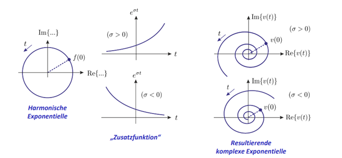
35.2.7. Gerade und ungerade Signale#
35.2.7.1. Gerade Signale#
Gerade Funktionen sind zur y-Achse spiegelsymmetrisch.
\(\ x_g(t) = x_g(-t)\)
Besipiele
Kosinus-Schwingung
Rechteckfunktion
\(\ x(t) = t^2 \)
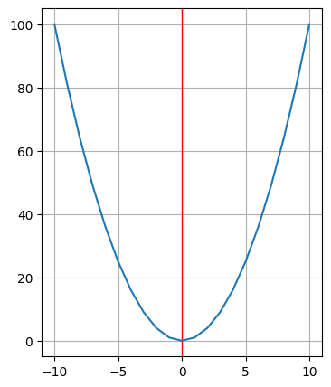
35.2.7.2. Ungerade Signale#
Ungerade Funktionen sind bezüglich des Ursprungs punktsymmetrisch.
\(\ x_u(t) = -x_u(-t)\)
Besipiele
Sinus-Schwingung
Sägezahnfunktion
\(\ x(t) = t^3 \)
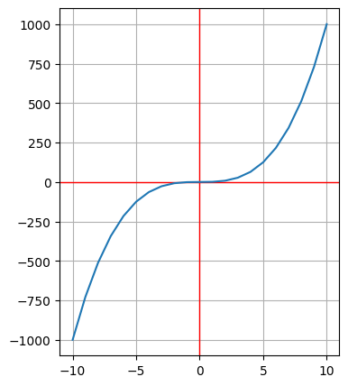
Jedes beliebige Signal x(t) kann in ein gerades und ungerades Teilsignal zerlegt werden:
\(\ x(t) = \frac{x(t) + x(-t)}{2} + \frac{x(t) - x(-t)}{2} \)
\(\ x_g(t) = \frac{x(t) + x(-t)}{2} \)
\(\ x_u(t) = \frac{x(t) - x(-t)}{2} \)
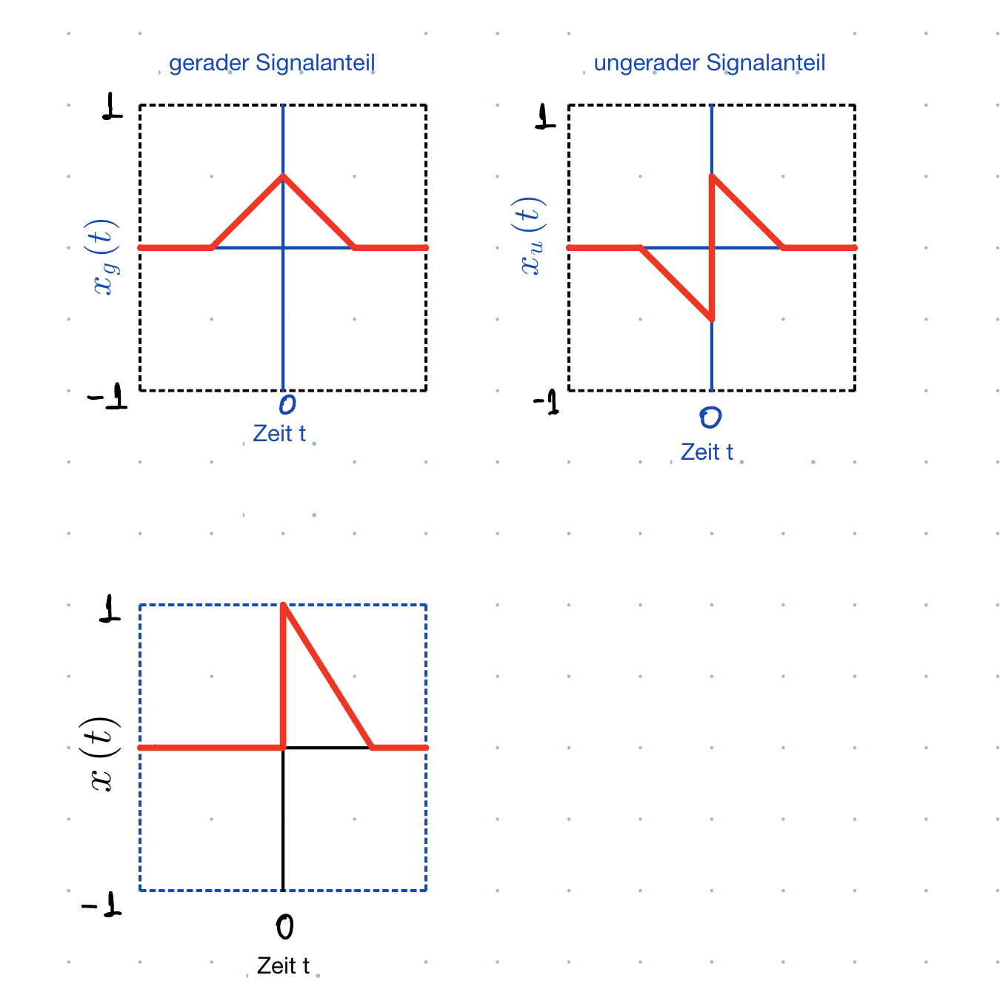
35.2.8. Zerlegung eines Signals in gerade und ungerade Anteile#
Phasenbehaftete Schwingung lässt sich in Kosinus- und Sinus-Schwingung zerlegen.
Kosinus-Schwingung: gerades Signal
Sinus-Schwingung: ungerades Signal
Beispiel [\(\ \cos(\alpha + \beta) = \cos(\alpha)\cos(\beta) - \sin(\alpha)\sin(\beta)\) ]
\(\ x(t) = \hat{x}\cos(2\pi f_0t+\phi)\)
\(\ = \frac{x(t) + x(-t)}{2} + \frac{x(t) - x(-t)}{2} \)
\(\ = \frac{\hat{x}\,\cos\,(\phi + 2\,\pi \,f_0\,t) + \hat{x}\,\cos\,(\phi - 2\,\pi f_0\,t)}{2} + \, \frac{\hat{x}\,\cos\,(\phi + 2\,\pi \,f_0\,t) - \hat{x}\,\cos\,(\phi - 2\,\pi f_0\,t)}{2} \)
\(\ = \hat{x}\,\cos\,(\phi)\,\cos(2\,\pi \,f_0\,t) - \hat{x}\,\sin\,(\phi)\,\sin(2\,\pi f_0\,t) \)
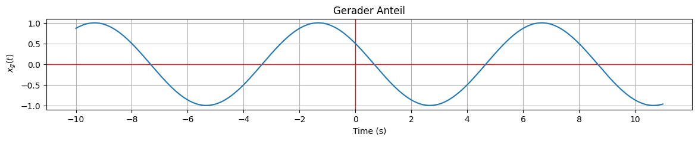
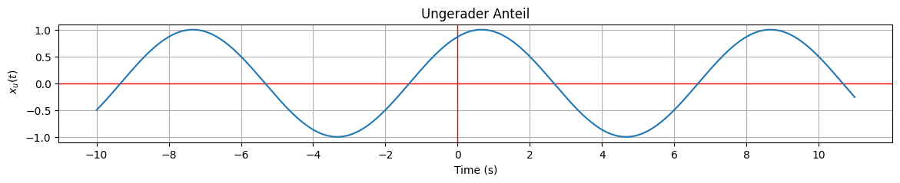
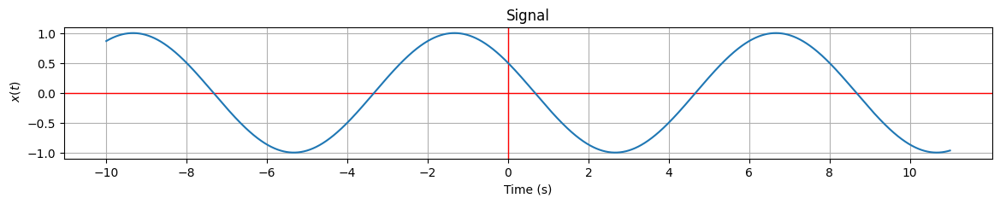